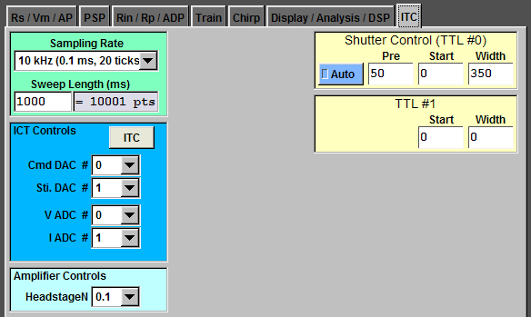

Sampling RateTo change the sampling rate, click "Sampling Rate" and select. In this example, the sampling rate is 10 kHz. Sweep LengthTo change the length of the recording, type in the length in ms in "Sweep Length (ms)" and press "Enter". The number of points is also displayed. ITC Channel ControlsTo change the DAC and ADC channels for command (Cmd), stimulation (Sti.), voltage (V), and current (I), click the respective boxe and select. Head Stage NThe head stage of BVC-700 can have different N number. Check your head stage and select the right one. Shutter ControlAfter the shutter opens, the system takes about 40 ms to stablize. Thus, it is a good practice to open the shutter for at least 40 ms before any optical recording. For example, to open the shutter 50 ms before the recording and keep open for additional 350 ms, type the values like the right example and press "Enter" in the "Shutter Control (TTL #0)" panel. In addition, you need to check "Auto". TTL #1 is not in use in the current configuration. |
 |